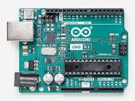
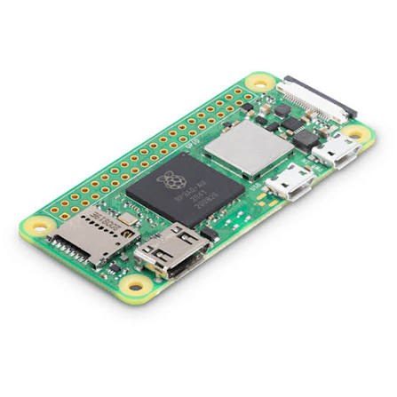
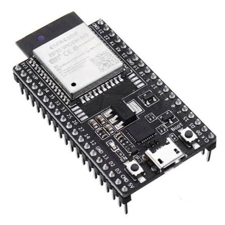
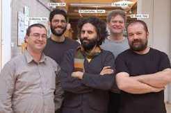
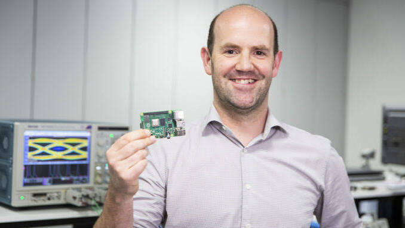

Um microcontrolador (ou MCU) é um pequeno computador em um único chip de circuito integrado, criado para controlar tarefas específicas em sistemas embarcados. Ele reúne processador, memória e portas de entrada e saída no mesmo componente.



Arduino: Uma plataforma de prototipagem eletrônica de código aberto baseada em hardware e software fáceis de usar. É amplamente utilizada para criar projetos interativos e robóticos.
Raspberry Pi: Um microcomputador de baixo custo que pode ser usado como microcontrolador em projetos de robótica, oferecendo maior capacidade de processamento e conectividade.
ESP8266/ESP32: Microcontroladores com conectividade Wi-Fi integrada, ideais para projetos de Internet das Coisas (IoT) e automação residencial.


Arduino: Criado por Massimo Banzi e David Cuartielles, com o objetivo de tornar a eletrônica mais acessível a artistas, designers e entusiastas.
Raspberry Pi: Desenvolvido pela Raspberry Pi Foundation, uma organização educacional do Reino Unido, para promover o ensino de ciência da computação.
ESP8266/ESP32: Desenvolvidos pela Espressif Systems, uma empresa chinesa especializada em soluções de conectividade sem fio.